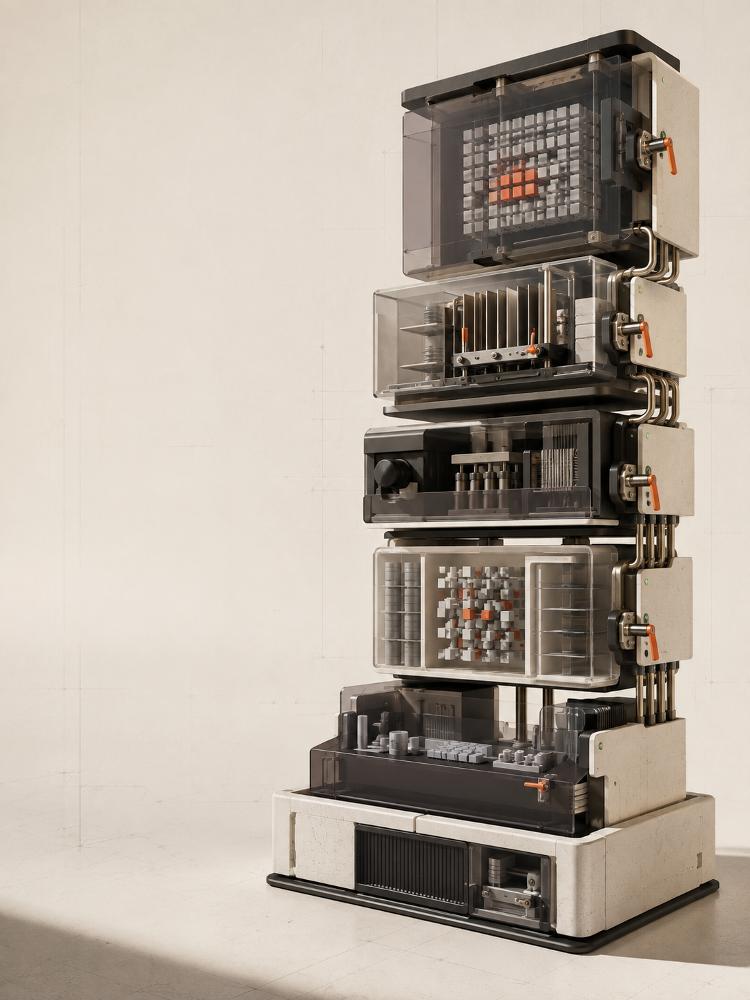

AI ENGINEERCOHORT 07
THEORY × PRACTICE
从 0 搭建
Production
Agent
13 周 · 同一个 CareKind AI 项目
从产品底座做到可评估的生产系统
理论 Live架构判断与技术边界
＋
实践 Live现场搭建、调试与验收
25场正式直播
45hLive 总时长
1条项目主线
结课不是听完课YOU WILL SHIP
01可运行的 CareKind AI 产品完整 workflow 与 human confirmation
02Production Agent 工程系统RAG · MCP · Memory · Harness · Router
03可证明的上线证据Evals · Trace · Red Team · Release Decision
CAREKIND BUILD PATHW01—W13
ADLC→UI→Voice→RAG→MCP→Agent→Memory→Harness→Routing→Evals